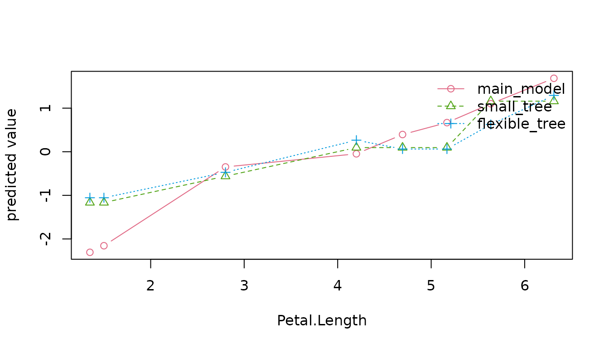

Your First Model with AutoXplainR
Source:vignettes/autoxplainr-introduction.Rmd
autoxplainr-introduction.RmdWhat AutoXplainR is for
Fitting a model is only one part of a useful analysis. A first-time modeler also needs to know whether the model works on unseen rows, whether it improves on a simple guess, which fitted patterns matter, and how to describe those patterns without claiming more than the analysis established.
AutoXplainR puts those questions in one workflow. Its safe default is
local and requires neither Java nor an API account. This vignette uses
the small built-in mtcars data only so every step is
reproducible.
Fit and evaluate in one call
result <- autoxplain(
mtcars,
target_column = "mpg",
seed = 2026
)
result
#> <AutoXplainR guided result>
#> question: predict `mpg` (regression)
#> engine: base
#> data: 26 training + 6 evaluation rows
#> models: 2 (primary + baseline)
#> result: primary model has rmse = 3.5529
#> baseline: 30.3% improvement in rmse
#> compare: use model_set = "tuned" for automatic multi-family selection
#> explain: use render_model_report() or as_explainers() for fitted patternsmpg is numeric with more than two distinct values, so
this is recognized as a regression problem. AutoXplainR reproducibly
holds out 20% of the rows, learns preprocessing from the remaining rows,
and fits two models:
- a linear regression using the input features; and
- an intercept-only baseline that ignores all input features.
The baseline matters. It answers whether the fitted relationships improve on a very simple reference rather than merely producing predictions.
Read the held-out metrics
result$leaderboard
#> rank model_id model role family backend
#> 1 1 main_model linear regression primary linear stats
#> 2 2 simple_baseline intercept-only baseline baseline baseline stats
#> rmse mae r_squared training_time_ms model_size_kb complexity
#> 1 3.552918 2.797996 -0.1281933 2 44.43750 11
#> 2 5.096266 3.907692 -1.3212249 2 19.82812 1
#> fit_warning prediction_time_ms
#> 1 1
#> 2 0
result$evaluation$metric_definitions
#> rmse
#> "Typical prediction error, with larger mistakes weighted more heavily; lower is better."
#> mae
#> "Average absolute prediction error in the target's units; lower is better."
#> r_squared
#> "Share of evaluation-set variation explained relative to predicting the evaluation-set mean; higher is better."
result$evaluation$improvement_over_baseline
#> [1] 0.3028389For regression, RMSE is the primary comparison metric. It is a typical error in the outcome’s units, with larger errors weighted more heavily. Lower is better. MAE is the average absolute error. R-squared compares squared error with a held-out mean reference and can be negative on genuinely unseen data.
The exact values from a six-row mtcars holdout are not a
basis for scientific conclusions; the example demonstrates the contract.
Real analyses need an evaluation set large and representative enough for
the intended use.
Build the report
path <- tempfile(fileext = ".html")
render_model_report(result, path, top_features = 4, n_repeats = 5)
file.exists(path)
#> [1] TRUE
unlink(path)The standalone report uses progressive disclosure:
- the modeling question and baseline verdict;
- every held-out metric with definitions;
- input reliance and fitted effect directions;
- warnings and concrete next actions; and
- a collapsed technical evidence audit and complete provenance.
The report does not need an LLM, Plotly, H2O, or a browser runtime after it is written.
Tune supervised models without opening the final holdout
When model selection is the goal, use the explicit tuned workflow:
tuned <- autoxplain(
iris,
target_column = "Species",
model_set = "tuned",
portfolio = "core",
max_models = 6,
nfolds = 3,
seed = 2026
)
tuning <- tuning_results(tuned)
tuning$candidates[, c(
"model", "hyperparameters", "cv_score", "cv_se", "selected"
)]
#> model
#> 1 neural network
#> 2 neural network
#> 3 multinomial logistic regression
#> 4 decision tree
#> 5 decision tree
#> 6 decision tree
#> hyperparameters cv_score cv_se
#> 1 hidden units = 2, weight decay = 0.03 0.09445857 0.03609199
#> 2 hidden units = 1, weight decay = 0.1 0.29456937 0.01072168
#> 3 default statistical fit 0.37178519 0.20170924
#> 4 max depth = 6, pruning cp = 0.003, minimum split = 10 2.37836688 1.40932486
#> 5 max depth = 2, pruning cp = 0.03, minimum split = 24 2.39466788 1.40612488
#> 6 max depth = 4, pruning cp = 0.01, minimum split = 14 2.39466788 1.40612488
#> selected
#> 1 TRUE
#> 2 FALSE
#> 3 FALSE
#> 4 FALSE
#> 5 FALSE
#> 6 FALSEThis executable vignette uses the dependency-light core
portfolio: a statistical reference, decision-tree pruning/depth
settings, and scaled neural-network hidden-unit/weight-decay settings.
It learns preprocessing separately inside each training fold.
The full registry is inspectable without installing any optional engine:
catalog <- as.data.frame(learner_catalog())
catalog[, c(
"family", "backend", "supported_tasks", "portfolios", "available"
)]
#> family backend supported_tasks
#> 1 linear stats/nnet regression, binary, multiclass
#> 2 regularized glmnet regression, binary, multiclass
#> 3 additive mgcv regression, binary
#> 4 tree rpart regression, binary, multiclass
#> 5 forest ranger regression, binary, multiclass
#> 6 boosting xgboost regression, binary, multiclass
#> 7 neural nnet regression, binary, multiclass
#> 8 kernel e1071 regression, binary, multiclass
#> 9 neighbors kknn regression, binary, multiclass
#> 10 mars earth regression, binary
#> portfolios available
#> 1 core, recommended, extended TRUE
#> 2 recommended, extended TRUE
#> 3 recommended, extended TRUE
#> 4 core, recommended, extended TRUE
#> 5 recommended, extended TRUE
#> 6 recommended, extended TRUE
#> 7 core, extended TRUE
#> 8 extended TRUE
#> 9 extended FALSE
#> 10 extended TRUEThe presets are deliberately easy to explain:
| Portfolio | Families | Intended first use |
|---|---|---|
core |
linear, tree, neural | dependency-light examples and a fast first tournament |
recommended |
linear, regularized, additive, tree, forest, boosting | the default serious tabular comparison after explicit engine installation |
extended |
all ten, adding neural, radial-kernel, neighbor, and MARS families | broader model-specification sensitivity when extra runtime is acceptable |
Additive and MARS fits currently support regression and binary outcomes, not multiclass outcomes. That task contract is why the exact number of participating families can differ by problem.
For a real model search, the default recommended
portfolio is broader. It compares linear, regularized, additive (where
supported), decision-tree, random-forest, and gradient-boosted-tree
behavior. Installation is explicit so the tournament never changes
silently with the packages present on one machine:
install_model_engines("recommended")
recommended <- autoxplain(
my_data,
target_column = "outcome",
model_set = "tuned",
portfolio = "recommended", # the default for tuned fits
nfolds = 5,
seed = 2026
)
learner_catalog()
compare_model_behavior(recommended)The extended portfolio additionally covers neural,
radial-kernel, nearest-neighbor, and multivariate adaptive regression
spline behavior when the task supports them. Advanced users can supply
an explicit learners vector, but most users should keep a
named preset.
The default one-standard-error rule first uses the documented family
priority, then chooses the least-flexible eligible setting inside that
family. Its family-specific flexibility proxies are never compared as if
they shared one unit. Use tuning_rule = "best" when the
explicitly desired rule is minimum resampled error instead. Both rules
and every fold score remain in the result. The within-family parsimony
heuristic follows the classic one-standard-error rule of Breiman,
Friedman, Olshen, and Stone (1984); the reviewed cross-family priority
is an explicit AutoXplainR policy choice, not a statistical ordering of
unlike model families.
The resampled score answers which configuration should be refitted? The held-out score answers how did that selected, refitted model perform on unseen rows? AutoXplainR keeps the outer evaluation rows out of tuning and labels the two numbers separately in the report.
When you supply test_data yourself, AutoXplainR uses the
neutral role evaluation unless you explicitly set
evaluation_role = "test" or "validation". Set
a role from the study design, not from the argument name. Exact
duplicate-valued records across training and evaluation rows trigger a
possible-leakage warning; choose overlap_action = "error"
for strict pipeline enforcement or "ignore" only after
confirming that coincident records are legitimate.
Advanced tuning is an escape hatch
When a study has a pre-specified search design,
tuning_control() validates it without expanding the
beginner call. This small example stays dependency-light:
control <- tuning_control(
grids = list(tree = data.frame(
maxdepth = c(2L, 5L),
cp = c(0.02, 0.002),
minsplit = c(10L, 5L)
)),
family_budgets = c(linear = 1L, tree = 2L),
metric = "mae",
retain_oof = FALSE
)
advanced <- autoxplain(
mtcars,
target_column = "mpg",
model_set = "tuned",
learners = c("linear", "tree"),
nfolds = 3,
tuning_control = control,
seed = 2026
)
tuning_results(advanced)$control[c(
"family_budgets", "metric", "retain_oof", "failure_policy"
)]
#> $family_budgets
#> linear tree
#> 1 2
#>
#> $metric
#> [1] "mae"
#>
#> $retain_oof
#> [1] FALSE
#>
#> $failure_policy
#> [1] "continue"The same object can carry fold_ids, a supported
task-specific loss, and failure_policy = "stop". Supplied
fold IDs require explicit test_data so they stay aligned
with unchanged training rows. They define ordinary V-fold resampling;
they are not automatically a grouped, rolling-origin, or
forward-chaining design.
Compare a small candidate set
The first call stays intentionally simple. When comparing a few approachable model shapes would help, use the explicit comparison mode:
comparison <- autoxplain(
iris,
target_column = "Sepal.Length",
model_set = "comparison",
test_fraction = 0.4,
seed = 2026
)
model_tradeoffs(comparison)
#> <AutoXplainR model trade-offs>
#> performance: rmse (lower is better)
#> secondary: model_size_kb (resource proxy; lower is better)
#> Pareto set: 3 / 4 supplied models
#> model_id model role rmse model_size_kb
#> main_model linear regression primary 0.2963068 49.46094
#> small_tree small decision tree candidate 0.3744086 36.66406
#> simple_baseline intercept-only baseline baseline 0.8691950 32.51562
#> flexible_tree flexible decision tree candidate 0.4126230 43.25000
#> pareto_optimal
#> TRUE
#> TRUE
#> TRUE
#> FALSE
#> note: Pareto status compares only the supplied models on the supplied evaluation data and exact displayed axes. Resource proxies are not structural complexity; this is not a final model-selection rule.This adds a shallow tree and a more flexible tree to the
pre-specified statistical model and intercept-only baseline. Pareto
status asks whether another supplied model is at least as good on both
held-out performance and approximate model-object size, with a strict
improvement on one. For local models, the size axis is R’s in-memory
object.size() estimate; it is a resource proxy rather than
structural model complexity.
The comparison is descriptive. AutoXplainR does not silently promote the holdout winner to primary, because selecting on the holdout and reporting the same score as final performance would be optimistic. Use fresh validation or a pre-specified resampling procedure when model selection itself is the goal.
The same comparison can reveal rows whose prediction depends strongly on model specification:
ambiguity <- prediction_ambiguity(comparison)
head(ambiguity$rows)
#> evaluation_row row_id observed prediction_min prediction_max prediction_range
#> 1 1 121 6.9 6.302632 6.854533 0.5519014
#> 2 2 38 4.9 5.042424 5.150000 0.1075758
#> 3 3 45 5.1 5.042424 5.569338 0.5269134
#> 4 4 111 6.5 6.302632 6.655556 0.3529240
#> 5 5 91 5.5 5.939797 6.500000 0.5602030
#> 6 6 108 7.3 7.143343 7.700000 0.5566568
#> prediction_sd
#> 1 0.27950628
#> 2 0.05421837
#> 3 0.27157039
#> 4 0.18215693
#> 5 0.28414510
#> 6 0.28013427Regression rows report the range of supplied candidate predictions. Binary and multiclass rows report hard-class disagreement and probability distance. This is not uncertainty coverage: the supplied models can perform very differently, and their held-out scores must remain beside the disagreement summary.
compare_model_behavior() gives the portfolio-level view.
Its behavior cards are reviewed prior knowledge about what each family
can represent; its scores and prediction gaps are computed from common
held-out rows:
behavior <- compare_model_behavior(comparison)
behavior
#> <AutoXplainR model behavior comparison>
#> models: 3 (main_model, small_tree, flexible_tree)
#> evidence: 60 test rows
#> performance: rmse (lower is better)
#> trade-off: model_size_kb (resource proxy)
#> distance: absolute difference in predicted target units
#> feature check: not computed
#>
#> Models at a glance
#> model family backend rmse relative_gap model_size_kb
#> main_model * linear stats 0.2963 0.0% 49.46
#> small_tree tree rpart 0.3744 26.4% 36.66
#> flexible_tree tree rpart 0.4126 39.3% 43.25
#> * best supplied evaluation score; rankings remain descriptive
#>
#> What differs
#> - main_model has the best supplied rmse score (0.2963).
#> - small_tree and flexible_tree differ most on average (0.284 using absolute difference in predicted target units).
#> - Before considering this dataset, main_model allows none unless encoded in features with none unless specified in features; small_tree allows stepwise with automatic along tree paths.
#>
#> Evidence key
#> behavior cards = prior knowledge about model capacity
#> metrics, prediction gaps, and optional permutation importance = computed evidence
#> caution: descriptive comparison, not causal or uncertainty coveragecompare_model_effects() answers the narrower
feature-level question by evaluating one named input on aligned rows and
a common grid:
petal_effects <- compare_model_effects(
comparison,
feature = "Petal.Length",
method = "ale",
n_points = 8,
seed = 2026
)
petal_effects$comparisons
#> model_a family_a model_b family_b n_overlap overlap
#> 1 main_model linear flexible_tree tree 8 [1.35, 6.3125]
#> 2 main_model linear small_tree tree 8 [1.35, 6.3125]
#> 3 small_tree tree flexible_tree tree 8 [1.35, 6.3125]
#> mean_absolute_level_gap centered_shape_rmse max_absolute_gap
#> 1 0.5741751 0.6781914 1.2514697
#> 2 0.4929357 0.6105097 1.1414220
#> 3 0.1512730 0.2136835 0.5334924
#> effect_rank_correlation direction_agreement method support_threshold
#> 1 0.9157291 0.5714286 ale 0.1
#> 2 0.9636241 0.4285714 ale 0.1
#> 3 0.9753048 0.6000000 ale 0.1
#> dependence_warning
#> 1 FALSE
#> 2 FALSE
#> 3 FALSE
plot(petal_effects)
Curve differences describe the supplied fitted prediction functions over the displayed support. They are not confidence intervals, intervention effects, or proof that a family used every nonlinear or interaction capacity available to it.
An interactive view is available when Plotly is installed:
plot_model_comparison(comparison)Investigate one fitted pattern
The guided result can be converted to a model-agnostic explainer. Select the primary model rather than the simple baseline:
explainer <- as_explainers(result, models = "main_model")$main_model
explainer
#> <AutoXplainR explainer>
#> model: main_model
#> task: regression
#> data: 6 rows x 10 features
#> id: axr-7221ef31Repeated permutation importance measures how much held-out performance changes when an input is shuffled:
importance <- calculate_permutation_importance(
explainer,
features = c("wt", "hp", "disp"),
n_repeats = 10,
seed = 2026
)
importance
#> <AutoXplainR permutation importance>
#> metric: rmse | repeats: 10 | baseline: 3.5529
#> feature importance std_error conf_low conf_high sign_stability
#> wt 1.7808278 0.3005901 1.1008457 2.460810 0.9
#> disp 0.8514659 0.2980729 0.1771782 1.525754 0.9
#> hp 0.6710299 0.1756528 0.2736757 1.068384 0.9
#> intervals describe permutation Monte Carlo variation, not population inferenceThe result keeps every repeat, a Monte Carlo interval, and sign stability. The interval describes randomness from shuffling. It is not a confidence interval for a population and cannot support a causal claim.
explain_effect() defaults to accumulated local effects
(ALE) for numeric inputs:
weight_effect <- explain_effect(explainer, feature = "wt")
weight_effect
#> <AutoXplainR ALE effect>
#> feature: wt | rows: 6 | max association: 0.829
#> target: predicted value
#> bands: Descriptive fixed-model bands propagated from within-bin variation in local prediction differences under an independent-bin approximation; unavailable if a bin has fewer than two rows and not model-fitting uncertainty, population confidence, or causal intervals.
#> wt accumulated_effect std_error conf_low conf_high n support
#> 2.688750 1.0055717 NA NA NA 1 1
#> 2.826250 1.0055717 NA NA NA 0 0
#> 2.963750 1.0055717 NA NA NA 0 0
#> 3.101250 1.0055717 NA NA NA 0 0
#> 3.206250 0.7587882 NA NA NA 1 1
#> 3.278750 0.7587882 NA NA NA 0 0
#> 3.351250 0.7587882 NA NA NA 0 0
#> 3.423750 0.7587882 NA NA NA 0 0
#> 3.493750 0.5290243 NA NA NA 1 1
#> 3.561250 0.5290243 NA NA NA 0 0
#> 3.628750 0.5290243 NA NA NA 0 0
#> 3.696250 0.5290243 NA NA NA 0 0
#> 3.744375 0.4311619 NA NA NA 1 1
#> 3.773125 0.4311619 NA NA NA 0 0
#> 3.801875 0.4311619 NA NA NA 0 0
#> 3.830625 0.4311619 NA NA NA 0 0
#> 4.020625 -0.7644614 NA NA NA 1 1
#> 4.371875 -0.7644614 NA NA NA 0 0
#> 4.723125 -0.7644614 NA NA NA 0 0
#> 5.074375 -1.9600847 NA NA NA 1 1ALE summarizes local prediction changes inside observed feature bins. It reduces the most direct extrapolation problem of a marginal partial-dependence plot under dependent inputs, but it still describes a fitted prediction function—not the effect of intervening on vehicle weight.
Open the reliability layer
The evidence audit is available when more technical review is useful:
audit <- audit_explanations(
as_explainers(result),
features = c("wt", "hp", "disp"),
n_repeats = 10,
seed = 2026
)
audit
#> <AutoXplainR explanation evidence audit>
#> grade: C (diagnostic, not certification)
#> models: 2 (1 near-optimal)
#> stable claims: 16.7%
#> max dependence: 0.829
#> explanation accord: n/a (one model)
#> prediction accord: n/a (one model)
#>
#> Findings
#> [warning] 2 feature(s) exceed the dependence threshold.
#> [warning] 5 model-feature claim(s) are qualified or unsupported.
#> [note] The permutation budget is suitable for smoke testing, not a final report.The audit checks computation stability, feature association, supplied-model performance, and explanation agreement. Because this example supplies a primary model and a baseline, it can also demonstrate that only competitively performing supplied models should influence an explanation comparison.
The A–D grade is a triage heuristic. It is not a p-value, certification, fairness test, or safety assessment.
Add a narrative only if it helps communication
The deterministic provider works offline:
memo <- generate_natural_language_report(result)
cat(substr(memo, 1, 400), "...")
#> # Model Fit and Evaluation Report
#>
#> ## Scope
#> This is a descriptive summary of a regression task for `mpg`, covering 2 model(s) and 10 feature(s).
#>
#> ## Did the model improve on a simple baseline?
#> The linear regression was evaluated on 6 test rows. Its **rmse** was 3.5529.
#> That is a 30.3% improvement over the intercept-only baseline (5.0963).
#>
#> ## What the main metric means
#> **rmse:** Typical prediction ...
attr(memo, "narrative_provenance")
#> $provider_requested
#> [1] "local"
#>
#> $provider_used
#> [1] "local"
#>
#> $model
#> NULL
#>
#> $remote
#> [1] FALSE
#>
#> $fallback
#> [1] FALSE
#>
#> $structured_requested
#> [1] TRUE
#>
#> $structured_used
#> [1] FALSE
#>
#> $disclosure
#> [1] "Aggregated diagnostics only. No raw rows, fitted model objects, case-level predictions, or secrets are included."
#>
#> $error
#> NULLRemote use requires an explicit provider:
Sys.setenv(GEMINI_API_KEY = "...")
memo <- generate_natural_language_report(result, provider = "gemini")
# Or use the Groq or Cloudflare free allowance
memo <- generate_natural_language_report(result, provider = "groq")
memo <- generate_natural_language_report(result, provider = "cloudflare")
# Or use a model running locally through Ollama
memo <- generate_natural_language_report(result, provider = "ollama")Only aggregated diagnostics are placed in the prompt. Raw rows, fitted objects, case-level predictions, and secrets are excluded. Provider and model details are attached to the returned text so the prose can be audited. Generated prose still needs human review against the numerical report.
Schema-capable providers return five validated fields by default. AutoXplainR renders them locally and inserts fixed interpretation boundaries that the model cannot omit. The schema constrains format, not truth; malformed output falls back to the deterministic report. Gemini uses its stateless Interactions API with provider storage disabled for this one-shot request.
See the repository’s narrative provider guide for the dated comparison of free access, structured-output support, privacy, and reproducibility. Provider plans and model catalogs can change independently of AutoXplainR.
Classification uses the same contract
flowers <- autoxplain(iris, target_column = "Species", seed = 2026)
flowers
#> <AutoXplainR guided result>
#> question: predict `Species` (multiclass)
#> engine: base
#> data: 120 training + 30 evaluation rows
#> models: 2 (primary + baseline)
#> result: primary model has log_loss = 1.1513
#> baseline: -4.8% improvement in log_loss
#> compare: use model_set = "tuned" for automatic multi-family selection
#> explain: use render_model_report() or as_explainers() for fitted patterns
flowers$evaluation$metric_definitions
#> log_loss
#> "Probability error that penalizes confident wrong answers; lower is better."
#> brier_score
#> "Unscaled mean sum of squared errors across all class probabilities, from 0 (best) to 2 (worst); lower is better. Its scale depends on the class set, so do not compare it directly with binary Brier scores or scores for a differently defined outcome."
#> calibration_error
#> "Average absolute gap between grouped probabilities and observed frequencies; lower is better, but the value depends on the evaluation sample and grouping."
#> accuracy
#> "Share of evaluation rows assigned to the correct class; higher is better."
#> macro_recall
#> "Recall calculated for each class and then averaged equally; higher is better. Unavailable when any trained class is absent from the evaluation rows."Classification splits are stratified. Binary tasks report log loss, Brier score, a binned calibration gap, accuracy, balanced accuracy, and ROC AUC. Multiclass tasks report log loss, Brier score, predicted-class calibration, accuracy, and macro recall. Log loss is primary because it evaluates probability quality and penalizes confident wrong predictions.
Calibration asks a more literal question: when the model reports a probability near 70%, does the corresponding event happen about 70% of the time on the held-out rows? The report explains this visually, and the grouped values remain available directly:
calibration_diagnostics(flowers)
#> <AutoXplainR probability calibration>
#> model: main_model
#> check: confidence in the predicted class
#> rows: 30 in 1 probability groups
#> average: 1 predicted vs 0.967 observed
#> binned gap: 0.033 (lower is better)
#> caution: sample- and grouping-dependent; not a population guaranteeThe binned gap is descriptive. It changes with the evaluation sample and the grouping, so it should be read beside log loss and Brier score rather than as a population guarantee.
For a binary task, the report also makes the 0.5 decision convention
visible. Use threshold_diagnostics() to compare a
deliberate set of cutoffs:
binary_cars <- transform(
mtcars,
am = factor(am, labels = c("automatic", "manual"))
)
binary_fit <- autoxplain(binary_cars, "am", seed = 2026)
threshold_diagnostics(binary_fit, thresholds = c(0.3, 0.5, 0.7))Lower thresholds usually find more positive cases while creating more false positives; higher thresholds usually do the reverse. The relative consequences belong to the application. A threshold chosen on these held-out rows must be evaluated again on different representative data.
Check an explicitly chosen group
Aggregate scores can hide weak spots. If the evaluation data contain a group that matters to the intended use, ask for the comparison directly:
cars_with_group <- transform(
mtcars,
transmission = factor(am, labels = c("automatic", "manual"))
)
group_fit <- autoxplain(cars_with_group, "mpg", test_fraction = 0.4, seed = 2026)
subgroup_performance(group_fit, by = "transmission", min_rows = 3)
#> <AutoXplainR subgroup performance>
#> model: main_model
#> compared by: transmission (2 groups)
#> metric: rmse (lower is better)
#> largest gap: 0.9029
#> caution: descriptive holdout check; not fairness certificationThe same check can be included in the standalone report with
subgroup = "transmission". AutoXplainR does not guess which
column is sensitive, and it does not call this a fairness assessment.
Observed gaps can come from small samples, different case mix,
measurement quality, or model behavior and require domain-specific
investigation.
Check whether missingness changed
The guided workflow retains per-column missing-value rates before imputation. This matters because a field that is absent much more often in evaluation or future use can change what the model is effectively being asked to do:
training <- data.frame(x = c(NA, 2:40), y = 1:40)
evaluation <- data.frame(x = c(rep(NA, 5), 46:60), y = 41:60)
missing_fit <- autoxplain(training, "y", test_data = evaluation)
missingness_shift(missing_fit)
#> <AutoXplainR missingness shift>
#> data: 40 training + 20 evaluation rows
#> predictors: 1 with any missing values
#> flagged: 1 model inputs at 5 percentage points
#> caution: practical flag; not a statistical test or general drift checkThe default five-percentage-point flag is an investigation prompt, not a hypothesis test. The diagnostic does not claim that the complete predictor distribution is stable, and it reports the rates before the training-derived imputation was applied.
Bring an existing model
The explanation layer does not depend on the guided fitting engine. Wrap an ordinary R model directly:
train <- mtcars[1:24, ]
test <- mtcars[25:32, ]
fit <- lm(mpg ~ wt + hp + disp, data = train)
existing <- explain_model(
fit,
test,
y = "mpg",
label = "existing linear model",
metadata = list(evaluation_role = "test")
)Other frameworks can supply a predict_function.
Where optional H2O AutoML fits
The native ten-family portfolio is the main local tuning path. H2O remains a separate, optional Java-backed engine when a broader AutoML search or stacked ensemble is appropriate:
holdout_rows <- seq(5L, nrow(iris), by = 5L)
h2o_result <- autoxplain(
iris[-holdout_rows, ],
target_column = "Species",
test_data = iris[holdout_rows, ],
engine = "h2o",
max_models = 10,
max_runtime_secs = 0,
exclude_algos = "DeepLearning",
use_test_as_validation = FALSE,
evaluation_role = "test",
seed = 2026
)
render_model_report(h2o_result, "h2o-report.html")This requires the suggested h2o package, Java, and an
H2O process. The default keeps the explicit test rows out of H2O
validation so they retain their final-evaluation role.
engine_leaderboard keeps H2O’s selection evidence; the
ordinary leaderboard scores the fixed H2O primary,
alternatives, and a simple baseline on common outer rows without
re-selecting from those scores. Setting a fixed model budget, disabling
the wall-clock limit, and excluding Deep Learning follows H2O’s
documented route to a more reproducible AutoML search. The result
records remaining caveats. H2O results still enter the same explainer,
audit, and report contracts; H2O is not required to obtain a complete
AutoXplainR report.
What to say—and not say
Reasonable language is specific to the fitted model and evaluation data:
On the held-out rows, shuffling
wtchanged the fitted model’s RMSE by the reported amount, with the displayed variation across permutation repeats.
The following requires a different design and evidence:
Reducing vehicle weight will cause fuel economy to improve by the fitted ALE amount in a target population.
AutoXplainR makes the first statement easier to compute and preserve. It does not turn it into the second.
Primary method literature
The portfolio is a common evaluation and explanation layer over established methods, not a claim that the learners themselves are new. Primary references for the implemented family ideas include:
- Nelder and Wedderburn (1972), generalized linear models, and Friedman, Hastie, and Tibshirani (2010), regularization paths for GLMs;
- Hastie and Tibshirani (1986), generalized additive models, and Breiman et al. (1984), classification and regression trees;
- Breiman (2001), random forests, and Chen and Guestrin (2016), XGBoost;
- Hornik, Stinchcombe, and White (1989), single-hidden-layer approximation capacity, Cortes and Vapnik (1995), support-vector classification, and Drucker et al. (1997), epsilon-insensitive support-vector regression;
- Cover and Hart (1967), nearest-neighbor classification, and Stone (1977), weighted nearest-neighbor regression consistency;
- Friedman (1991), multivariate adaptive regression splines; and
- Fisher, Rudin, and Dominici (2019), model-class reliance, and Apley and Zhu (2020), accumulated local effects, for the explanation scope used here.
The package-level evaluation features have their own methodological basis; they are not consequences of whichever learner backend is installed:
| AutoXplainR feature | Methodological anchor | Scope in this package |
|---|---|---|
| training-only selection plus an outer evaluation split | Stone (1974), cross-validatory model choice, and Varma and Simon (2006), bias from non-nested error estimation | separates configuration choice from final descriptive evaluation |
| one-standard-error eligibility | Breiman, Friedman, Olshen, and Stone (1984), Classification and Regression Trees | adapts a parsimony heuristic within each family; the package’s cross-family priority remains a disclosed policy choice |
| log loss and Brier score | Brier (1950), probability forecast verification, and Gneiting and Raftery (2007), strictly proper scoring rules | scores probabilities without reducing them immediately to classes |
| binned calibration check | Murphy (1973), probability-score decomposition | descriptive grouping diagnostic, not a population calibration interval |
| decision-threshold sensitivity | Fawcett (2006), ROC analysis | displays false-positive/false-negative trade-offs without optimizing on the holdout |
| candidate-relative Pareto status | Miettinen (1999), nonlinear multiobjective optimization | dominance only over supplied models and displayed objectives |
Implementation-specific behavior is also versioned in
learner_catalog(). For example, the forest adapter follows
Wright and Ziegler’s ranger implementation,
while the SVM adapter inherits probability-estimation behavior from
Chang and Lin’s LIBSVM. Backend
citations describe software and algorithms; they do not change the
evaluation estimand above.
These references motivate family capacity and model-agnostic explanation estimands. They do not make a fitted AutoXplainR result causal or externally valid; those claims still require an appropriate study design and new evidence.